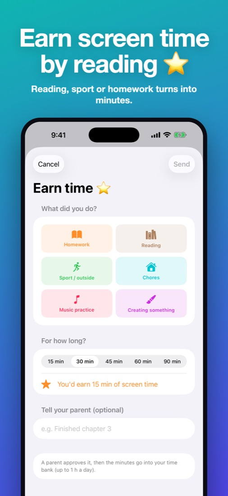
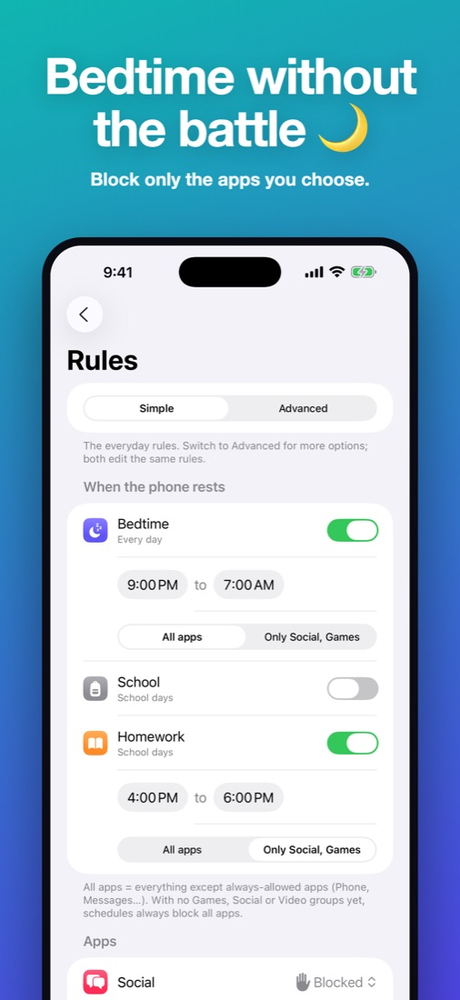
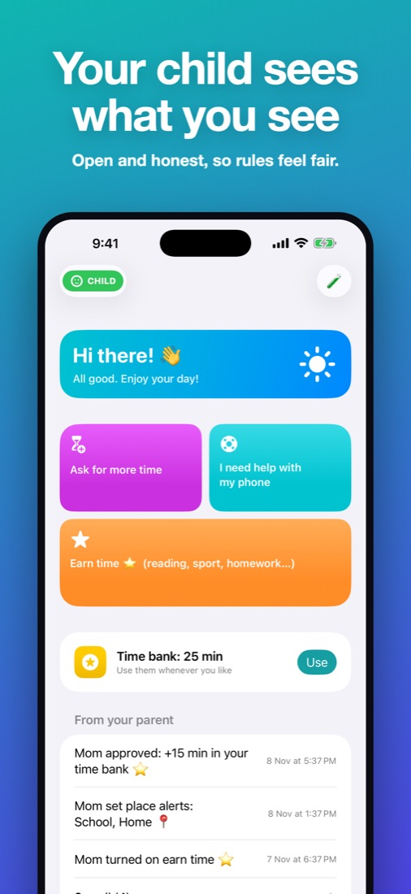

Guide, don't just guard
Rules your child can see and understand, so screen time stops being a daily fight.
Ask, then one tap
Your child asks for more time and tells you why. You get a notification and answer with one tap: +15 min, other, or no.
Earn screen time
Reading, sport, homework or chores turn into minutes in a time bank. Kids start asking to read.
Bedtime without the battle
Bedtime, school and homework schedules block only the apps you choose. Daily limits for games, social or video.
Nothing hidden
Your child sees exactly what you can and can't see or do. Rules feel fair when they're open.
Know when they arrive
Optional location and arrive/leave alerts for school, home or practice. Your child always knows when it's on.
Your week at a glance
A weekly summary of wins, limits reached and time earned, every Sunday.
See it in action
Real screens from the app. Swipe for more.





Private by design
We built Kid Shepherd so that we, the developer, can't see your family's data.
Simple pricing
Free
- One child and one parent
- Ask for more time, one-tap answers
- Bedtime, school and homework schedules
- Daily limits, pause, extra time
- Location sharing
Kid Shepherd Plus
- More children
- A second parent
- Earn time (reading, sport, homework)
- Arrive and leave alerts for places
- The full weekly summary
Questions parents ask
What is Kid Shepherd?
Kid Shepherd is a parental control and screen time app for iPhone and iPad. Your child asks for more screen time and says why, and you answer with one tap from your own phone. It also has earn-time for reading, sport or homework, bedtime and school schedules, daily limits and optional arrival alerts.
Is Kid Shepherd free?
Yes. It is free for one child and one parent, with no ads. Kid Shepherd Plus ($4.99 a month or $39.99 a year, with a 7-day free trial) adds more children, a second parent, earn-time, arrive and leave alerts for places, and the full weekly summary.
How is Kid Shepherd different from Apple Screen Time?
Kid Shepherd is built on Apple's Screen Time framework, so app blocking is done by iOS itself. On top of it, Kid Shepherd adds requests with a reason and one-tap answers from the parent's phone, earning screen time by reading or homework, schedules that block only the app groups you choose, a screen where the child sees the rules, and optional arrival alerts.
Do I need Family Sharing?
No. Putting the child in Family Sharing gives the strongest protection, but Kid Shepherd also works on any iPhone, which suits teens, and has a reminders-only mode that works without Screen Time.
Does Kid Shepherd need an account or collect my child's data?
No accounts are needed. There are no ads and no tracking. Family data is end-to-end encrypted between your family's devices, so the developer cannot see it. Privacy policy
Which devices does Kid Shepherd work on?
iPhone and iPad with iOS or iPadOS 17 or later. Install it on the parent's device and the child's device and pair them with a QR code or a 6-digit code. Android is not supported.
Can I see where my child is?
Yes, if you turn it on. Location sharing is optional, and Kid Shepherd Plus adds arrive and leave alerts for places such as school, home or practice. Your child can always see when location sharing is on.
Fewer fights about screens
Install on your phone and your child's phone, pair with a code, and set your first rule in a few minutes.